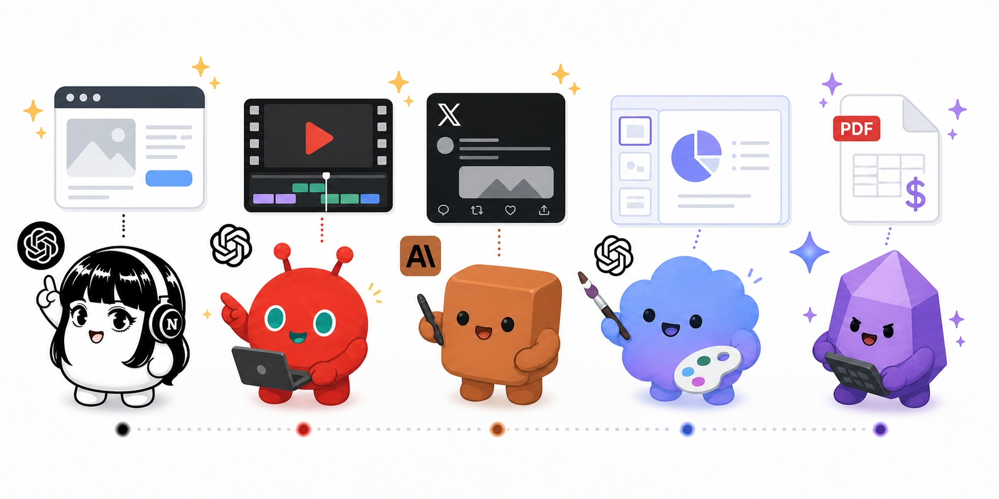
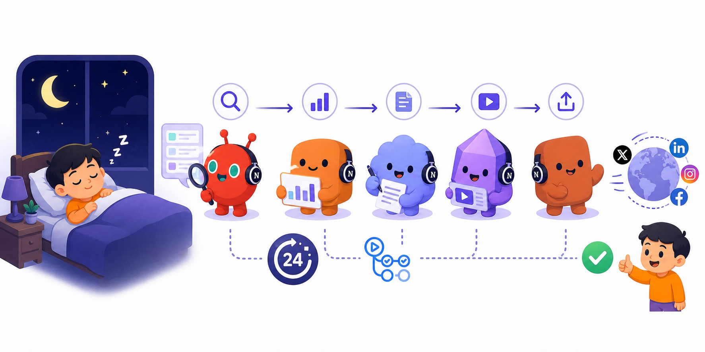
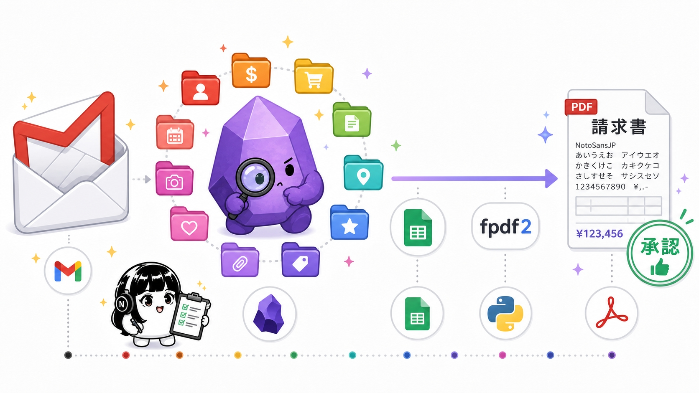
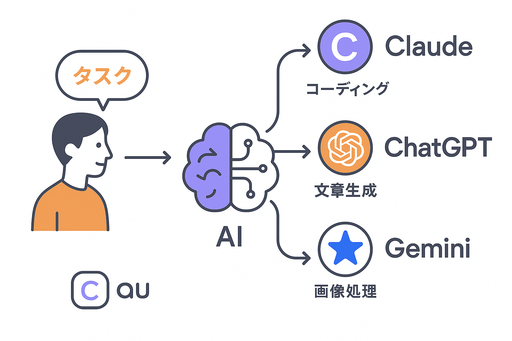
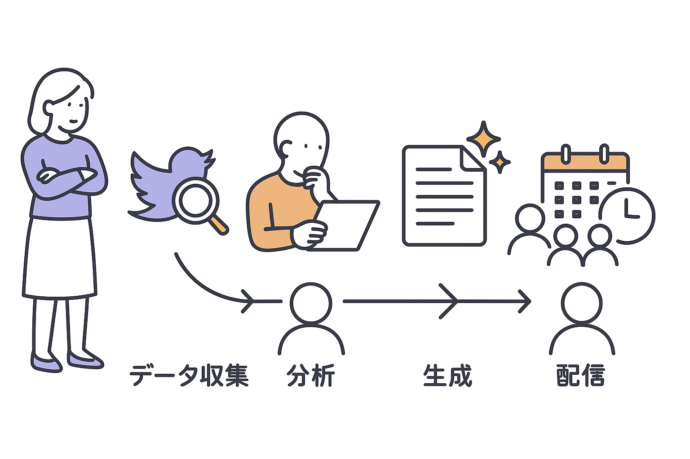
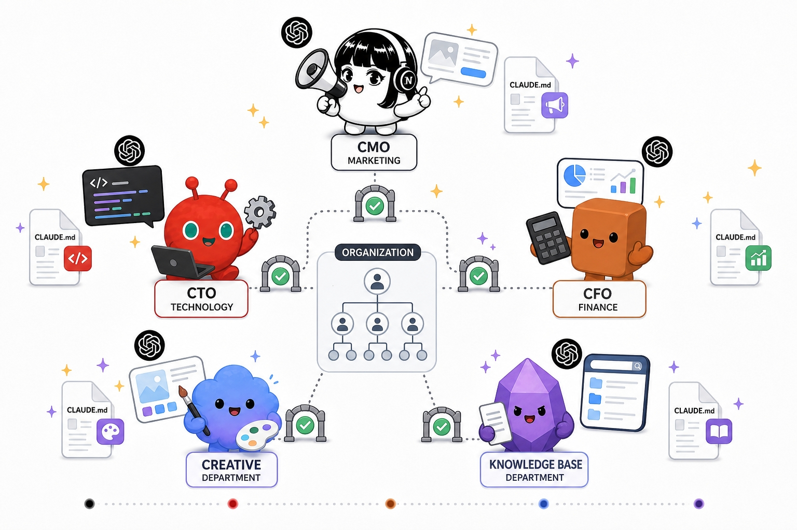
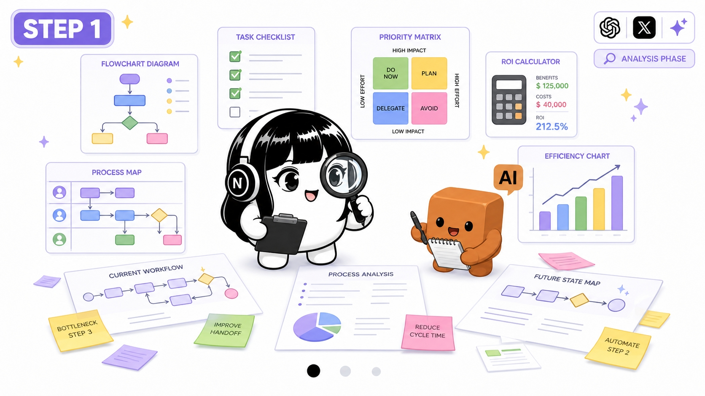
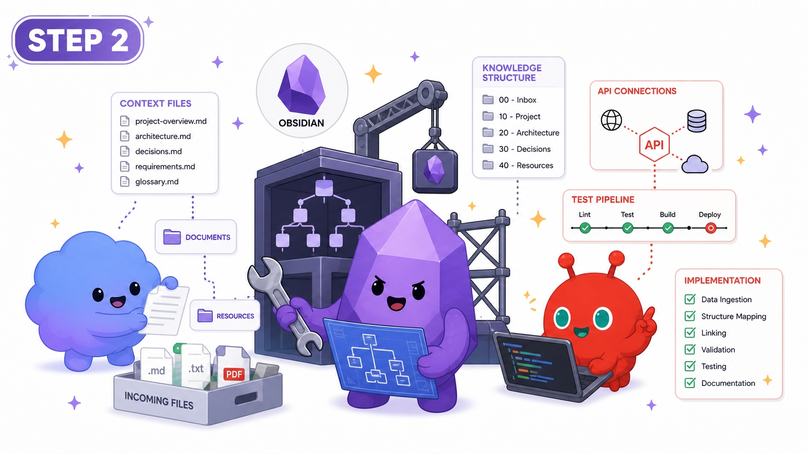
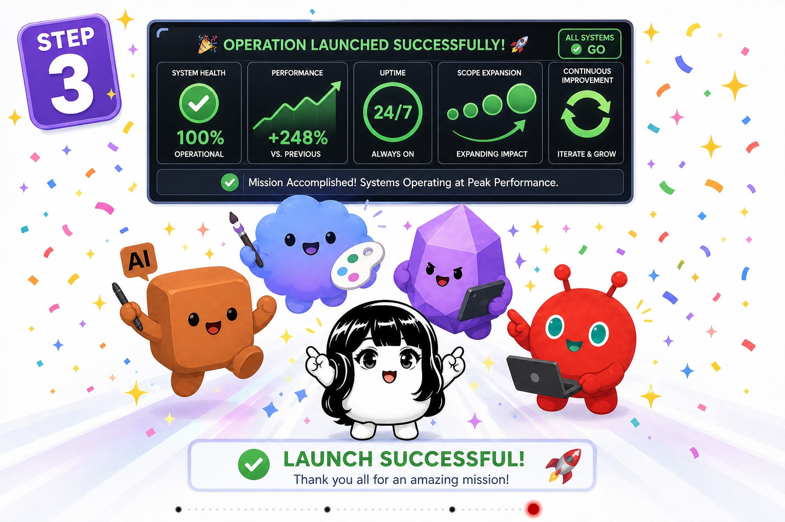

BUSINESS 01
HP制作、動画編集、SNS運用、スライド作成。PLaiの業務は100% AIで動いています。24時間365日稼働するAI社員が、マーケティングから経理まであらゆる業務を自動化します。
— Every task, every hour, powered by AI.


PLaiでは、Webサイト、動画、SNS投稿、プレゼン資料、請求書まで、すべてをAIが制作・処理しています。Claude Code、GPT、Geminiを業務特性に応じて使い分け、タスクごとに最適なモデルを自動選択するマルチエージェントシステムを自社で構築・運用しています。
人間が寝ている間も複数のAIが連携し、データ収集→分析→コンテンツ生成→投稿まで自動実行。人間は意思決定と承認だけに集中し、実行はすべてAIに任せる。これがPLaiの「AI社員」という考え方です。
WHAT AI CREATES
当サイトを含む全てのWebサイトをAIが設計・コーディング・デザインまで一貫して制作。Claude Codeがコードを書き、デザインの微調整までチャットだけで完結します。
今ご覧のこのサイトも、100% AIで作られています。
サービス紹介動画、ローンチPV、イベント告知映像まで、企画・構成・編集・ナレーション生成をAIが一貫して担当。ElevenLabsによるAIナレーションとRunwayによる映像生成を組み合わせています。
事業計画書、協業提案書、セミナースライドまでAIが自動生成。構成設計からデザインまで一貫対応し、300以上のテンプレートから最適なものを自動選択します。
8つのXアカウント、合計46,000人以上のフォロワー運用をすべてAIで自動化。毎朝バズ投稿を分析し、アカウント別のペルソナに合わせた投稿を生成、最適時間帯に自動配信します。

PLaiのAI社員システムは、単一のAIモデルに依存しません。コーディングにはClaude Code、長文の分析にはGemini、画像生成にはGPT-image-2など、タスクの特性に応じて最適なモデルを自動で振り分けるオーケストレーション層を構築しています。

高精度な出力が必要な業務には高性能モデルを、定型処理には軽量モデルを割り当て、月間のAI運用コストを最大60%削減しています。

PLaiではCEO直轄のもと、CMO（マーケティング）、CTO（テクノロジー）、CSO（営業）、CFO（財務）、CHRO（人事）、そして各部門の実行担当まで、合計7つの部門にAI社員を配置しています。
マーケティング部門だけでも、動画編集担当、X運用担当、LINE配信担当、画像生成担当、スライド作成担当と、それぞれの業務に特化したAI社員がいます。人間の判断が必要なポイントだけ承認フローを設計し、それ以外はすべて自動で回る仕組みです。
 Claude Code
開発・実装
Claude Code
開発・実装
 Codex
自律開発
Codex
自律開発
 Hermes
エージェント
Hermes
エージェント
 Obsidian
知識管理
Obsidian
知識管理
 OpenClaw
教育
OpenClaw
教育

AI社員は、単発のタスク処理にとどまりません。データ収集→分析→コンテンツ生成→配信→効果測定→改善というサイクルを、人間の介入なしで24時間回し続ける仕組みを構築しています。
GitHub Actionsによる定期実行、Obsidianへの自動ナレッジ蓄積、投稿の自動スケジューリング。これらを一本のパイプラインとしてつなぐことで、「朝起きたら昨日の成果が上がっている」という運用を実現しています。
REAL WORKFLOWS

X投稿自動化
GitHub Actionsのcronで毎晩22時に起動。バズ投稿を自動収集→構文分析→アカウントごとに15パターンの投稿案を自動生成→品質バリデーション（文字数・メディア・重複チェック）→翌朝8時から45分間隔でスケジュール配信。人間は朝起きたら投稿が配信されています。

請求書・経費処理
Gmail MCPで受信メールを監視し、請求書・領収書を自動検出。12カテゴリに自動分類してGoogle Sheetsに記録。さらにfpdf2で請求書PDFを自動生成し、NotoSansJPフォントで日本語対応。振込先・品目・金額まで自動で埋め込み、承認ボタン1つで送付完了。

コンテンツ制作
Peatixイベントの作成、告知文の生成、X・LINE・Discordへの配信を一括自動化。動画制作ではWhisperで文字起こし→Geminiで要約→ElevenLabsでナレーション生成→自動編集。スライド資料もAIが構成から作成し、SlideBoxで微調整するだけ。
SERVICES

01
Claude、GPT、Geminiを業務特性に応じて使い分けるアーキテクチャを設計します。タスクの種類（コーディング、文章生成、画像処理、データ分析）ごとに最適なモデルを自動選択し、品質を維持しながらコストを最適化する仕組みをつくります。

02
データ収集からコンテンツ配信まで、エンドツーエンドの自動化パイプラインを構築します。GitHub Actions、Obsidian、各種APIを連携させ、人間の介入なしで24時間稼働する仕組みをお客様の業務に合わせて設計します。

03
お客様の組織構造に合わせて、部門別のAI社員を設計します。マーケティング、営業、財務、人事など、それぞれの部門に特化した知識ベース（CLAUDE.md）を構築し、承認フロー付きの安全な自律運用を実現します。
HOW IT WORKS

STEP 1
お客様の業務フローをヒアリングし、どの業務をAIに任せられるかを洗い出します。投資対効果の高い業務から優先的にAI社員の設計を行います。

STEP 2
Obsidianで社内の暗黙知を体系化し、AI社員が参照するコンテキストファイルを作成。パイプラインの実装とテストを行います。

STEP 3
段階的にAI社員の稼働範囲を拡大。モニタリングダッシュボードで稼働状況を可視化し、継続的な改善をサポートします。